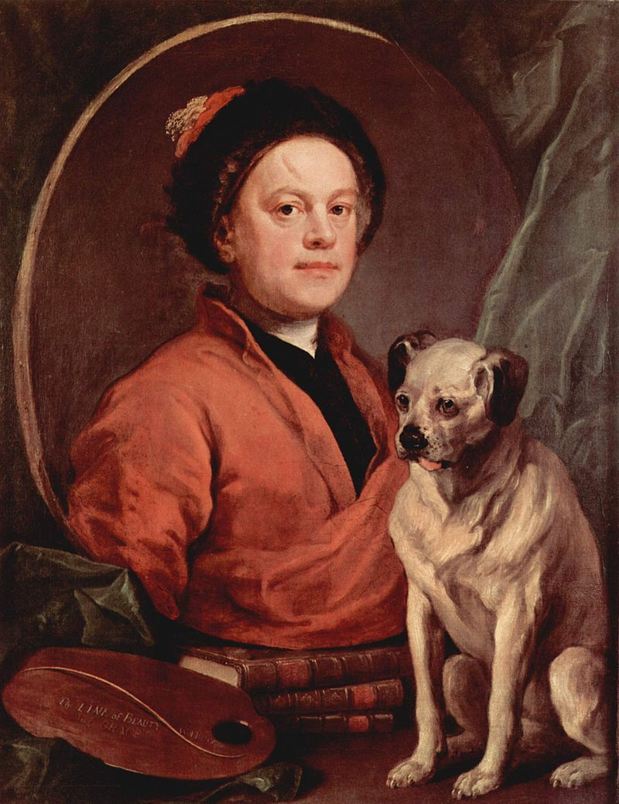

The breed named "pug" became popular in the 16th and 17th century. Pugs were popular at European courts, and reportedly become the official dog of the House of Orange in 1572 after a Pug named Pompey saved the life of the Prince of Orange by alerting him to the approach of assassins. Pugs were even beginning to appear in paintings, the oldest painting I could find was a painting in 1795 of William Hogarth and his pug, Trump. Pugs arrived in the United States during the nineteenth century and were soon making their way into the family home and the show ring.
William Hogarth and his pug, Trump.